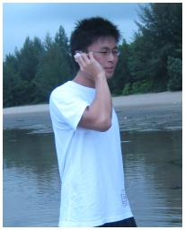

|
 |
Lionel NG
PhD Candidate, Department of Biological Sciences (2016 - present)
|
Current Project(s)
Marinas as marine biodiversity refugia
Natural coasts have been extensively modified into marinas and coves to cater to the demand for marine recreation and seafront living. While the original flora and fauna are inevitably affected by such development, the modified environments may be able to function as new habitats and provide shelter and support for marine organisms.
The project aims to survey the macrobenthic, epibiotic and pelagic biodiversity existing both within and outside marinas in Singapore. The information gathered will help to define the roles that marinas can play as refugia for marine biodiversity.
Academic & Employment History
- B.Sc. (2nd Class Honours) in Life Sciences (Concentration in Biology), National University of Singapore: 2004 - 2008
- M.Sc. (Environmental Management), National University of Singapore: 2013 - 2015
- Research Assistant, National University of Singapore: 2012 - 2014 (Department of Biological Sciences); 2008 - 2012, 2014 - 2016 (Tropical Marine Science Institute)
Awards and Research Grants
- Wildlife Reserves Singapore Conservation Fund (2014) - Evaluating the success of coral reef restoration in Singapore, S$24,920.
- IOC/WESTPAC Wprkshop on Coral Reef Restoration Techniques in the Western Pacific Region (21-23 September 2012) - Financial support from IOC/WESTPAC and Japan Funds in Trust, with co-sponsorship of the Department of Marine and Coastal Resources, Thailand, JSPS Asian CORE Program, and Chulalongkorn University.
Publications
Toh TC, Ng CSL, Peh JWK, Toh KB, Chou LM. 2014. Augmenting the post-transplantation growth and survivorship of juvenile scleractinian corals via nutritional enhancement. PLoS ONE 9(6): e98529. doi:10.1371/journal.pone.0098529
Ng CSL, Toh TC, Toh KB, Tun K, Chou LM. 2014. High density aggregations of cucumariids (Holothuroidea: Echinodermata) on a Singapore sedimented reef. Marine Biodiversity doi:10.1007/s12526-014-0228-1
Chavanich S, Gomez E, Chou L, Goh B, Tan LT, Tun K, Toh TC, Cabaitan P, Guest J, Ng CSL, Omori M, Thongtham N, Chankong A, Viyakarn V, Zhu W. 2014. Coral restoration techniques in the Western Pacific region. UNESCO-IOC/WESTPAC Bangkok Office. 8pp.
Ng CSL, Chou LM. 2014. Rearing juvenile ‘corals of opportunity’ in in situ nurseries – A reef rehabilitation approach for sediment-impacted environments. Marine Biology Research 10(8): 833-838.
Featured in National University of Singapore Faculty of Science Research News http://www.science.nus.edu.sg/research-highlights/1065-restoring-reefs-with-doomed-corals
Chou LM, Toh KB, Ng CSL. 2014. What lies beneath – Biodiversity in Raffles Marina. Nautique Mar/Apr 2014 p.12-13.
Ng CSL, Toh TC, Toh KB, Guest J, Chou LM. 2014. Dietary habits of grazers influence their suitability as biological controls of fouling macroalgae in ex situ mariculture. Aquaculture Research 45(11): 1852-1860. doi:10.1111/are.12128.
Toh TC, Ng CSL, Guest J, Chou LM. 2013. Grazers improve health of coral juveniles in ex situ mariculture. Aquaculture 414: 288-293.
Ng CSL, Toh TC, Chou LM. 2013. Current status of coral reef restoration in Singapore. The Asian Conference on Sustainability, Energy and the Environment 2013 p. 546-558.
Toh TC, Ng CSL, Chou LM. 2013. Enhancing resilience of coral reefs through active restoration: Concepts and challenges. The Asian Conference on Sustainability, Energy and the Environment 2013 p.528-545.
Ng CSL, Chen D, Chou LM. 2012. Hard coral assemblages on seawalls in Singapore. TMSI St John's Island 10th Anniversary Volume: Contributions in Marine Science p.75-80.
Ng CSL, Ng SZ, Chou LM. 2012. Does an ex situ coral nursery facilitate reef restoration in Singapore's waters? TMSI St John's Island 10th Anniversary Volume: Contributions in Marine Science p.95-100.
Ng CSL, Ong LJ, Chou LM. 2012. Lyngbya majuscula blooms in an enclosed marine environment. EnvironmentAsia 5(2): 93-98.
Tan YZ, Ng CSL, Chou LM. 2012. Natural colonization of a marina seawall by scleractinian corals along Singapore's east coast. Nature in Singapore 5: 177-183.
Chou LM, Ng CSL, Chan SMJ & Seow LA. 2010. Natural coral colonization of a marina seawall in Singapore. Journal of Coastal Development 14(1):11-17. (Winner of 2010 COASTDEV AWARD)
Chou LM & Ng CSL. 2010. Atypical morphology of Turbinaria peltata from a Singapore non-reefal environment. Nature in Singapore 3:217-219.
Teo S, Ng CSL & Loh KS. 2010. New record of a sea cucumber, Holothuria (Stauropora) fuscocinerea Jaeger, 1833 (Holothuroidea: Aspidochirotida: Holothuriidae) in Singapore. Nature in Singapore 3:133-137.
Teo S, Ng CSL, Suen SM, Lok AFSL & Ng PX. 2010. Notes on the sea cucumber, Afrocucumis africana (Semper, 1868) (Holothuroidea: Dendrochirotida: Sclerodactylidae) in Singapore. Nature in Singapore 3:65-68.
Teo S & Ng CSL. 2009. New record of a sea cucumber, Holothuria ocellata (Jaeger, 1833) (Holothuroidea: Aspidochirotida: Holothuriidae) in Singapore. Nature in Singapore 2:411-414.